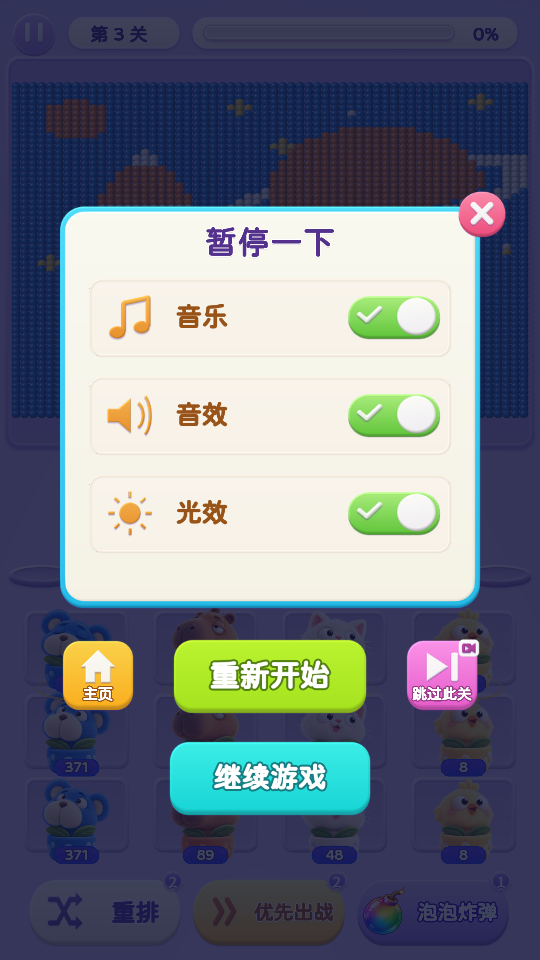
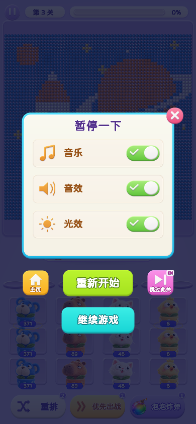

关卡暂停页 · 跳过此关
“主页 · 重新开始 · 跳过此关”排成一行，继续游戏仍在下方。粉色跳过按钮带视频标识，标题与轻薄投影保持当前样式。

暂停页 · 540 × 960
新增按钮位于重新开始右侧。

暂停页 · 390 × 844
相同布局与按钮点击区域。
广告成功回调后
当前关卡结算胜利，弹出原有胜利界面；点击下一关后再进入下一关。
广告沿用项目现有接口。当前接口为测试模式，直接回调成功，不播放真实视频；胜利只接在成功回调后。
已检查准备阶段、战斗中和教学关跳过；重复点击只结算一次，下一关解锁与胜利记录在刷新后保留。主页设置页没有跳过按钮。普通屏与长屏浏览器检查通过。
普通关卡检查 · 教学关检查 · 状态与攻击清理检查 · 原有逻辑文件校验 · 主页设置页
本地构建：2026-10-23 23:48:51（Asia/Shanghai） · 分支 plush-toy